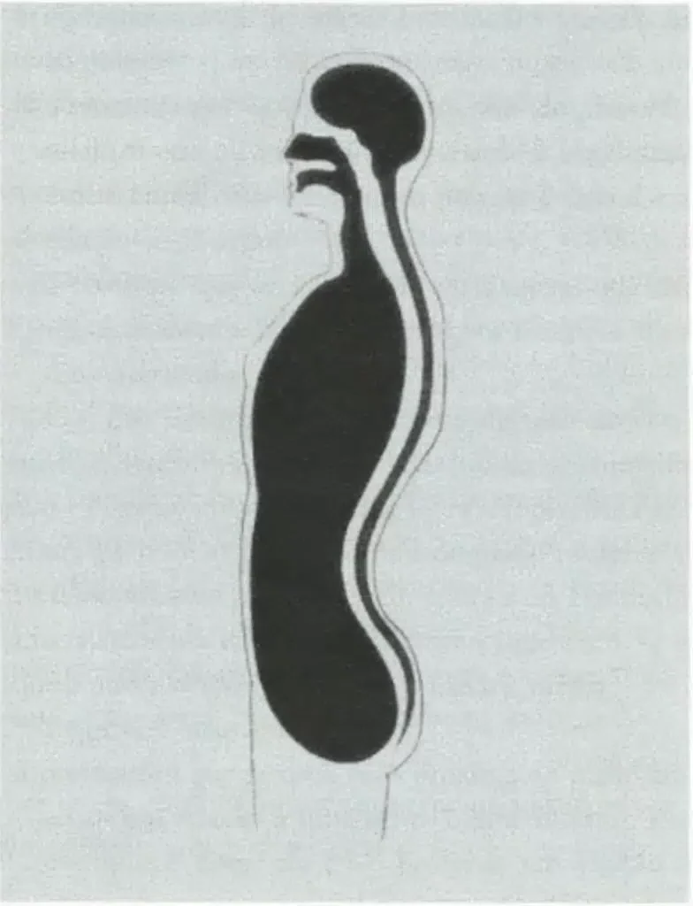
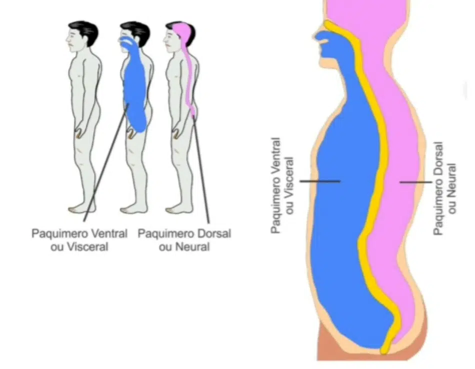

Entendendo os Órgãos Internos.
A esplancnologia é o ramo da anatomia que estuda as vísceras (órgãos internos) e suas estruturas relacionadas.
Esses órgãos estão localizados principalmente nas cavidades torácica, abdominal e pélvica, desempenhando funções vitais para a manutenção da vida.
Baseando-nos no livro Anatomia Humana Sistêmica e Segmentar dos renomados autores Dangelo e Fattini, vamos explorar os principais aspectos dessa área.
A diferença entre vísceras e órgãos está principalmente no uso e no contexto do termo:
Órgãos: são estruturas anatômicas compostas por diferentes tipos de tecidos, organizadas para desempenhar funções específicas no organismo. Ex.: coração, fígado, rins, pulmões, pele.
Vísceras: é um termo mais restrito que se refere especificamente aos órgãos localizados dentro das cavidades corporais, especialmente as cavidades torácica, abdominal e pélvica. Geralmente envolve órgãos do sistema digestório, respiratório, urinário e reprodutor. Ex.: estômago, intestinos, fígado, bexiga, útero.
Resumo:
Toda víscera é um órgão, mas nem todo órgão é uma víscera.
Por exemplo, o cérebro e a pele são órgãos, mas não são vísceras.
É o princípio segundo o qual o segmento axial do indivíduo é constituído, esquematicamente, por 2 tubos (como mostra a figura a seguir).
Os tubos, denominados paquímeros, são respectivamente: anterior ou ventral, posterior ou dorsal.
O paquímero anterior (maior) contém a maioria das vísceras, e por esta razão, é também denominado paquímero visceral.
O paquímero posterior compreende a cavidade craniana e o canal vertebral e aloja o sistema nervoso central, por isso é denominado paquímero neural.
Para conclusão do raciocínio, as vísceras devem estar localizadas no paquímero visceral e serem invervadas pelo sistema nervoso autônomo.
A língua por exemplo não pode ser considerada uma víscera, mesmo que esteja localizada no paquímero anterior. Pois ela é constituída por músculo estriado esquelético e portanto, não é inervada pelo sistema nervoso autônomo.


Compare as diferenças no quadro a seguir:
| Característica | Órgãos | Vísceras |
|---|---|---|
| Definição | Estruturas anatômicas formadas por diferentes tecidos, com funções específicas no organismo. | Subconjunto de órgãos localizados dentro das cavidades corporais. |
| Localização | Podem estar em qualquer parte do corpo (superficial ou interna). | Estão dentro das cavidades torácica, abdominal e pélvica (paquímero anterior). |
| Exemplos | Coração, pulmão, fígado, rins, pele, cérebro. | Estômago, intestinos, fígado, bexiga, útero, pulmões. |
| Abrangência | Termo mais amplo: todo víscera é um órgão, mas nem todo órgão é víscera. | Termo mais restrito: refere-se apenas a alguns órgãos internos. |
| Uso do termo | Mais comum em anatomia geral e fisiologia. | Mais usado em anatomia topográfica e clínica. |